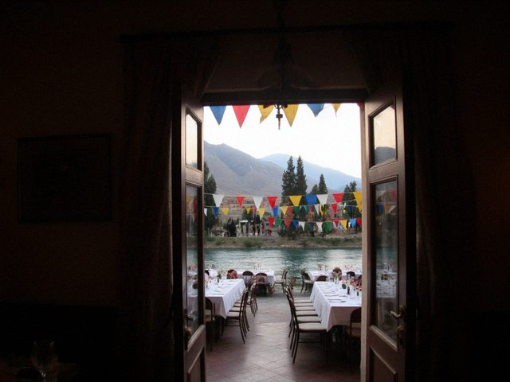

Aug212011
Sunday, August 21st, 2011 at 10:15 pm by bekzhan
I was at Meerim's toi yesterday: Talgat invited me (Talgat came from Almaty with two suitcases of presents). The toikana is on the river, 400 guests, a hundred tables, a tamada who could make a stone laugh. The sep was shown, the kuda was done, the groom looked as if he had been carried there in a box.

outside the toikana, by the river, before the guests came. After that I only saw plov.Meerim wore red and white and cried in the first minute. Her friend Aika sat next to her all evening and did not stop crying either. I ate three plates of plov. The plov was stirred properly, Chu rice, the way it should be, and I forgave the music.
Posted in Life | 3 Comments »
Jun122011
Sunday, June 12th, 2011 at 12:40 pm by bekzhan
I am writing this on the bus. Kündölük 3.0 opened yesterday with a new feature: you can post from a phone, by a special page. My thumbs do not agree. It took me eleven minutes to type "hello".
If this post has strange letters, it is because the phone thinks the Iradi letter ı is a mistake. I'll fix it when I am at a keyboard.
Posted in Computers | 1 Comment »
Oct242010
Sunday, October 24th, 2010 at 9:30 pm by bekzhan
Things I know from the logs of a bank machine, without knowing a single customer's name:
- On the 1st and 15th of the month the queue is long and the machine is happy.
- The most common amount is 50 som. The second most common is "everything".
- Many people take the card out before the money. The machine beeps. The people do not hear it.
- At 3 a.m. the most common customer is a taxi driver.
- Very few people read the screen. Everyone presses the green button.
That last one is my fault, I helped design the screens.
Posted in Work | 1 Comment »
Mar142010
Sunday, March 14th, 2010 at 3:20 am by bekzhan
It is 03:20. I'm writing this in the dark kitchen after a night call. An ATM at the railway station refused cards. Remote check: nothing. I took a taxi to the station (the driver asked if I was a doctor), opened the machine in front of two sleepy people with suitcases, and found a piece of chewing gum in the card slot.
Case closed. Taxi: 14 som. Salary for this call: zero. Chewing gum: still in the evidence bag.
Posted in Work | 1 Comment »
Feb82010
Monday, February 8th, 2010 at 7:00 pm by bekzhan
Sorry, no posts for a long time. Since November I work in the IT department of Talasbank, in the group that looks after the ATMs. When an ATM in Talas does not give money, it is my phone that rings. At 3 in the morning too.
Good salary (for Talas). Bad sleep.
Posted in Work | 1 Comment »